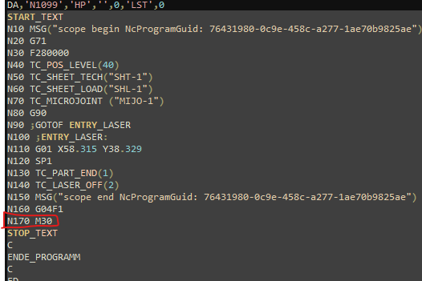
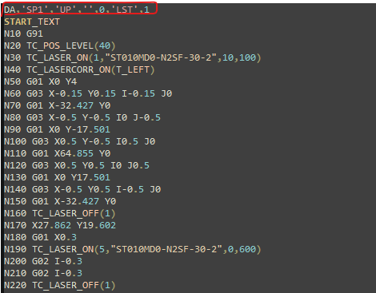
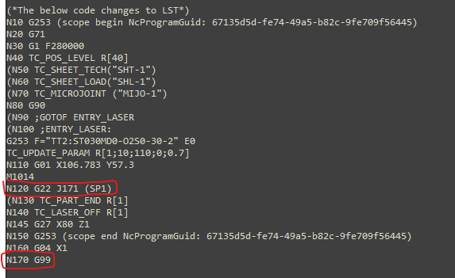
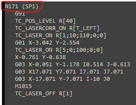
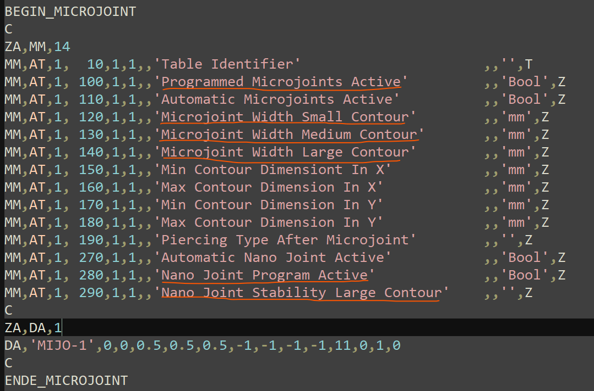

Difference between DIN and LST programming
-
Introduction to LST programming format
-
Identification of Main Program in LST From the LST file the main program is identified with the set of text that starts with ‘HP’ and ends with M30.

-
Identification of Sub programs in LST
In the LST file, the sub programs are called from the main program with the syntax “SP@”, where @ is the number of sub program, eg: SP1 will call the respective sub program!

-
List of Cycle Programs The cycle programs are pre-defined in the LST to perform a specific function in the program and the list is as follows:
S.No |
Name |
Description |
DIN support |
1. |
TC_POS_LEVEL(40) |
Updates the Head position with the given value |
Yes |
2. |
TC_SHEET_TECH(“SHT-1”) |
— |
No |
3. |
TC_SHEET_LOAD(“SHT-1”) |
— |
No |
4. |
TC_MICROJOINT(“MIJO-1”) |
Adds the soft micro joint with given parameters |
Yes |
5. |
TC_LASER_ON(params) |
Switches the LASER beam ON with given technology table |
Yes |
6. |
TC_LASERCORR_ON(T_LEFT) |
Activates the tool radius compensation G41/G42 with given value |
Yes |
7. |
TC_LASER_OFF(param) |
Switched the LASER beam OFF & moves the head up with given parameter |
Yes |
8. |
TC_PART_END(param) |
— |
No |
9. |
TC_LEAD_IN(params) |
Adds the Lead In after soft micro joint with given parameter |
No |
10. |
TC_WRITE(params) |
Marks the text with given parameters |
Yes |
11. |
TC_SYNC_POS_SUPPRESS_ON |
Deactivates Frog jump |
Yes |
12. |
TC_SYNC_POS_SUPPRESS_OFF |
Activates Frog jump |
Yes |
13. |
TC_SHEET_THICK |
Position the head with the previous height before the remnant cut |
Yes |
14. |
TC_Wait(param) |
Laser Cycle for Corner cooling to prevent burning in. The laser beam is switched OFF |
Yes |
Note: The list will be updated with new entries, implementation in DIN , etc.,
-
List of Special commands
S.No |
Name |
Description |
DIN support |
1. |
ROT RPL=90 |
Rotates the contour by 90 deg |
Yes |
2. |
ROT |
Cancel the contour rotation |
Yes |
3. |
FLIN |
Feed rate varies linearly |
No |
4. |
FNORM |
Feed rate normal |
Yes |
5. |
IC |
Incremental command |
Yes |
-
Abstract of DIN conversion From the LST file, only the main & sub-programs are converted to DIN format with the cycle programs defined very similar to LST.
-
Main program: The main program is defined in the DIN with N-blocks in ascending order and should not be repeated in the same program, also the end of the main program is terminated via G99.

-
Sub-programs:
The sub programs are called from the main program using the syntax “G22 J@”, where @ is the number of the N-block defined for the start of Sub-program within the same program.

-
Cycle programs: The cycle programs of LST are defined very similar in DIN with limitation to parameter transfer.
LST format |
DIN format |
TC_POS_LEVEL(40) |
TC_POS_LEVEL R[40] |
TC_SHEET_TECH(“SHT-1”) |
— |
TC_SHEET_LOAD(“SHT-1”) |
— |
TC_SHEET_THICK |
TC_SHEET_THICK |
TC_MICROJOINT(“MIJO-1”) |
— |
TC_LASER_ON(1,"ST010MD0-N2SF-30-2",10,100) |
G253 F="TT2: ST010MD0-N2SF-30-2" E0 |
TC_LASERCORR_ON(T_LEFT) |
TC_LASERCORR_ON R[T_LEFT] |
TC_LASER_OFF(1) |
TC_LASER_OFF R[1] |
TC_PART_END(1) |
— |
TC_LEAD_IN("LI-1",T_LEFT) |
— |
TC_SYNC_POS_SUPPRESS_ON |
TC_SYNC_POS_SUPPRESS_ON |
TC_SYNC_POS_SUPPRESS_OFF |
TC_SYNC_POS_SUPPRESS_OFF |
TC_WRITE("Teil2_Mittel_Schwer","ST030MD0-O2S0-30-2",5,-90) |
G253 F="TT2: ST030MD0-O2S0-30-2" E0 |
TC_Wait(1,2) |
TC_Wait R[1,2] |
-
Special commands
LST format |
DIN format |
ROT RPL=90 |
G89 C=90 |
ROT |
G89 |
G01 X=IC(0.001) |
G01 X=0.001 I2 |
-
TC_UPDATE_PARAM: A new cycle program called “TC_UPDATE_PARAM” was added for DIN format to extract the information such as LTT, Laser method, Pierce type, Cutting type of the contour from the TC_LASER_ON well in advance, so that the parameters are updated in the traverse motion. Additionally the Fly-cut, Micro joints, Nano joints, etc., information are also indicated in 4th parameter as bit wise: Bit0 – Fly cut active Bit1 – Micro-Joint active Bit2 – Nano-Joint active 5th parameter – Defines the MJ length. 6th parameter – Defines the NJ stability.
LST format |
DIN format |
TC_LASER_ON(1,"ST010MD0-N2SF-30-2",10,100) |
G253 F="TT2: ST010MD0-N2SF-30-2" E0 |
-
Start of Contour – M1014: The start of each contour was indicated as “M1014” to activate the fast outputs depends on the traverse distance, will be used for Frog Jump function, update of parameters, etc.,
-
End of Contour – M1015: The start of each contour should be ended using “M1015” to deactivate the fast outputs depends on the last contour distance, will be used for Soft micro joints, change of cut parameter at end, etc.,
-
Process flow of DIN conversion:
-
In Main program:
-
Gather all the traverse commands followed by sub program call before TC_LASER_OFF.
-
Before the start of traverse command, add G253 parameter extracted from TC_LASER_ON of the SP1 sub program call.
-
Now check for the TC_WRITE call before TC_LASER_ON at the beginning of the SP1 sub program. if present, then jump to the sub program call (point 2)
-
If no TC_WRITE, then add TC_UPDATE_PARAM with the parameters extracted from TC_LASER_ON of the sub program call.
-
After the end of traverse command or before the sub program call, add the “M1014” to indicate the start of contour.
-
-
In Sub program:
-
As flow start from the main program, the M1014 in main program should be ended by M1015 in the sub program before the TC_LASER_OFF.
-
For next TC_LASER_ON command, add G253 & TC_UPDATE_PARAM before the traverse command, if the LTT is same then ignore the G253 command.
-
After the end of traverse command or before the TC_LASER_ON, add the “M1014” to indicate the start of contour.
-
Please note for single contour, there may be multiple TC_LASER_ON and the above 2 points (b & c) are only valid if M1014 is not added for that contour.
-
For the added M1014, the M1015 command should be added before the TC_LASER_OFF.
-
Jump to Point b.
-
-
Contour Rotation:
LST format |
DIN format N80 G90 N110 G01 X877.551 Y10 N120 ROT RPL=90 N130 SP1 N140 ROT N80 G90 N110 G01 X877.551 Y10 N120 G89 C=90 (rotate contour XY plane) N130 G22 J251 (SP1) N140 G89 (cancel the rotation) |
-
Fly cut:
Fly cut – G823 command in contour will activate the Fly cut in TC_UPDATE_PARAM as 4th parameter Bit0=1.
| LST format | DIN format |
|---|---|
G01 X0 Y-9.526 G823 (contour contains G823, Fly cut active) |
TC_UPDATE_PARAM R[5;0;100;1;0;0] |
-
TC_WRITE:
TC_WRITE("Teil2_Mittel_Schwer","ST030MD0-O2S0-30-2",5,-90)
TC_LASER_OFF(1)
| LST code | Explanation |
|---|---|
Teil2_Mittel_Schwer |
The text to be written |
ST030MD0-O2S0-30-2 |
Technology table to be used |
5 |
Text height in mm |
-90 |
Text direction in degrees |
Conversion to Din as follows:
| DIN code | Explanation |
|---|---|
G253 F="TT2: ST030MD0-O2S0-30-2" E0 |
Transfer of TT followed by H100. If there is no change in TT, then ignore this 2 lines! |
G253 F=” Teil2_Mittel_Schwer” E0 |
Text to be written is transferred via G253 command to the PLC |
TC_WRITE R[5;-90;0] |
TC_WRITE is called with following parameters: |
TC_LASER_OFF R[1] |
Switch Off the laser and move the head up to the defined position |
G253 F="TT2: ST030MD0-O2S0-30-2" E0 |
In above, the G253 command is used for the text to be written, so for the next TC_UPDATE_PARAM then again add the TT transfer, else there will be error! |
-
Incremental Command (IC):
LST format |
DIN format N70 G01 X=IC(-0.001) N80 G03 I0.001 N100 G01 X=IC(0.001) N70 G01 X=-0.001 I2 N80 G03 X0 Y0 I0.001 J0 N100 G01 X=0.001 I2 |
-
Soft Micro-Joints & Nano-Joints: The Micro-joints & Nano-Joints information are defined in the LST under the MICROJOINT table as shown below.

-
Activation of MJ & NJ in TC_UPDATE_PARAM – 4th parameter as follows:
-
Bit1 – Micro-Joint active.
-
Bit2 – Nano-Joint active.
-
-
Micro joints – Combination of TC_MICROJOINT(“MIJO-1”) & G821 command in contour, the length of micro joint depends on Contour type is defined in the TC_UPDATE_PARAM – 5th parameter.
-
Nano joints stability is defined in the TC_UPDATE_PARAM – 6th parameter.
| LST format | DIN format |
|---|---|
Micro-Joints |
TC_MICROJOINT(“MIJO-1”) (Len = 0.7mm in table) G01 X0 Y99.5 G821 (contour contains G821) |
TC_UPDATE_PARAM R[1;10;100;6;0.5;0] |
Nano-Joints |